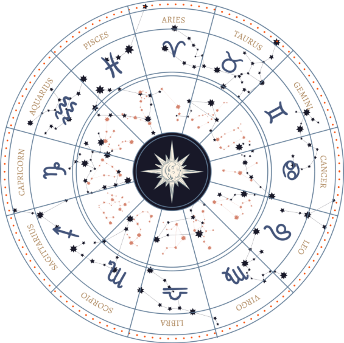
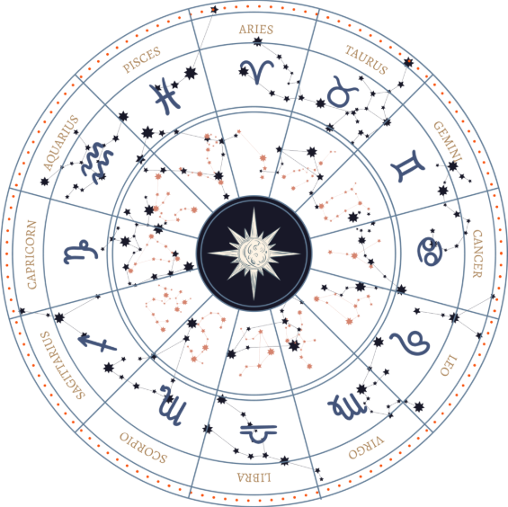

About Guruji
நாட்கள் இப்படியே நகர்ந்தது குருஜி அவர்கள் அவர் தாயாருடைய உடல் நிலையை குறித்து விவரித்த பொழுது "அம்மாவிற்கு வாயில் எச்சில் ஊறிக் கொண்டே இருக்குமாம் அதை எழுந்து போய் துப்ப முடியாத நிலையில் குருஜி அவருடைய தாயார் இருந்திருக்கிறார் அதற்காக ஒரு தேங்காய் ஓட்டில் மண் நிறைத்து அதில் காலை முதல் மாலை வரை அந்த உமிழ் நீரை உமிழ்வாரம் , கை கால்கள் எல்லாம் மிகப்பெரியதாக வீங்கி இருந்ததாம், வலி தாங்காமல் அழுது கொண்டே இருப்பாராம், இதைப் பார்த்து குருஜி என்ன செய்வது என்று தெரியாமல் அழுது கொண்டிருப்பாராம், அந்த சமயத்தில் தான் குருஜி அவர்களுடைய தந்தை ஒரு நாள் கிருஷ்ணகிரி மாவட்டம் காவேரிப்பட்டணம் என்ற பகுதியில் இருந்து ஒரு சாமியாரை அழைத்து வந்தாராம், அவர் அந்த காலத்திலேயே அம்பாசிடர் காரில் வந்ததாக குருஜி சொல்லுகிறார் , அவரைப் பார்த்ததும் குருஜி நினைத்தாராம் எவ்வளவோ பேர் அப்பாவுடைய பணத்தை ஏமாற்றி வாங்கி சென்று விட்டனர் இவரும் அதில் ஒருவர் தானே என்பது போல் பார்த்தாராம் ,
அதன் பிறகு இரவு சில பூஜைகள் நடந்ததாம் , பூஜையின் பொழுது திடீரென்று ஆக்ரோஷமாக கத்திக் கொண்டே ஓடிய அந்த மந்திரவாதி வீட்டின் அருகில் ஒரு இடத்தை காட்டினாராம் அந்த இடத்தில் பள்ளம் தோண்ட ஆரம்பித்தனர் கூட வந்த சிசியர்கள் எல்லாம் தோன்று தோண்ட நீர் ஊற்றிய தான் சிறிது நேரம் கழித்து அங்கிருந்து ஒரு பொம்மையை கொண்டு வந்தாங்களாம் அந்த பொம்மை தம்பியால் கட்டப்பட்டிருந்தது அந்த பொம்மைக்கு எங்கெல்லாம் கம்பியால் கட்டப்பட்டு இருந்தும் அங்கெல்லாம் குருஜி ஓடிய தாயாருக்கு வழி இருந்ததாம் இதை உறுதி செய்ய அந்த பூசாரி ஒரு ஊசி எடுத்து அந்த பொம்மைக்கு குத்த ஆரம்பித்தார் அந்த பொம்மைக்கு எங்கெல்லாம் குத்துகிறாரோ அங்கெல்லாம் அம்மா அவர்கள் வழி தாங்காமல் துடிக்க ஆரம்பித்தாராம், அதன் பிறகு பூஜைகள் தொடர்ந்து நடந்து கொண்டிருந்ததாம்,இரவு 3 மணி அளவில் குருஜி அவருடைய தாயார் ஒரு கட்டில் மீது படுத்திருப்பாராம் அவர்களுடைய தாயார் அருகில் குருஜி அவர்கள் படுப்பது வழக்கமா அதன்படி பூஜைகள் நடந்து கொண்டிருக்கும் பொழுதே அதன் மீது நம்பிக்கை இல்லாத குருஜி அவர்கள் தாயின் அருகில் படுத்தி தூங்கிவிட்டாராம் காலையில் கண்விழித்து பார்த்தாராம் யாரோ ஒரு பெண்மணி நின்று கொண்டிருக்கிறார் ,அந்த பக்கமாக திரும்பி நின்று கொண்டிருந்ததால் யார் என்று தெரியவில்லை தூக்க கலக்கம் அல்லவா கண்களை தேய்த்தபடியே யாரென்று பார்த்திருக்கிறார், குருஜி அவர்கள் அந்த வரிகளை விவரிக்கிறார் "அங்கு நின்று கொண்டிருந்தது எனது அம்மா வந்திருக்கக்கூடிய மந்திரவாதி ஏதோ ஒரு பூஜையை என் அம்மாவை நிற்க வைத்து செய்து கொண்டிருந்தார் மந்திரம் ஓதிக் கொண்டு இருந்தார் அருகாமையில் இருவதிற்கும் மேற்பட்டோர் அமர்ந்திருந்தனர் ,இரண்டு வருட காலமாக படுத்த படுக்கையாக இருந்த என் அம்மாவை பார்த்திருக்கிறேன் திடீரென்று எழுந்து நின்று கொண்டிருக்கிறார் பார்ப்பதற்கு மிகவும் சந்தோஷமாக இருந்தது யார் இருக்கிறார்கள் எல்லாம் நாம் பார்க்கவில்லை ஓடிப்போய் பின்பக்கமாக இருந்து கட்டிப்பிடித்துக் கொண்டு அம்மா என்று அழுதேன் அந்த நாள் எனக்கு இன்றும் ஞாபகம் இருக்கிறது ஒரு நாளும் அதை நான் மறக்க மாட்டேன்
பிறகு அந்த மந்திரவாதி அவர் தாயாரை அந்த மாந்திரீகத்தில் இருந்து குணப்படுத்தி இருக்கிறார், அன்று முதல் குருஜி அவர்களுக்கு எப்படியாவது இந்த விதையை கற்றுக்கொண்டு என் அம்மாவை போல கஷ்டப்பட்டவர்களுக்கு கஷ்டப்படுபவர்களுக்கு நான் உதவி செய்ய வேண்டும் என்ற எண்ணம் இருந்ததாம் அதன் பிறகு காலம் கடந்தது குருஜி அவர்கள் ஐடிஐ வரை படித்தார் அதன் பிறகு ஓசூர் மாநகரத்தில் மட்டும் இயங்கக்கூடிய லோக்கல் சேனல் என்று சொல்லக்கூடிய ஒரு டிவி சேனலில் வேலைக்கு சேர்ந்திருக்கிறார் அங்கு முதலில் கேமரா மேன் ஆக இருந்தவர் பிறகு வர்ணனையாளராக சில நிகழ்ச்சிகளை தொகுத்து வழங்கி இருக்கிறார் அதன் பிறகு படிப்படியாக முன்னேறி ஒரு நிகழ்ச்சியை அவரே தனியாக செய்ய வாய்ப்பு கிடைத்திருக்கிறது அந்த நிகழ்ச்சியின் பெயர்தான் "மூன்றாவது கண்" அமானுஷ்ய நிகழ்வுகளை எல்லாம் படம்பிடித்து அதை ஒரு நிகழ்ச்சியாக ஒளிபரப்புவது என முடிவு செய்த அந்த டிவி சேனல் இவருக்கு அந்த பொறுப்பை வழங்கி இருக்கிறது குருஜி அவர்களுக்கு அப்பொழுதுதான் பல மாந்திரீகர்களை சாமியார்களை சந்திக்கக்கூடிய வாய்ப்பு கிடைத்திருக்கிறது நூற்றுக்கணக்கான சாமியார்களையும் சந்தித்து இருக்கிறார் அவர்களுடன் பழகி இருக்கிறாள் பிறகு இவர் சொந்தமாக ஒரு லோக்கல் டிவி சேனல் ஆரம்பித்து இருக்கிறார் அதன் காரணமாக சாமியார்களிடம் இன்னும் நெருக்கமாக இருக்கிறார், சாமியார்களுடன் சென்று மயான பூஜையில் கலந்து கொள்வது அதை படம் பிடிப்பது போன்ற நிகழ்வுகளை எல்லாம் குருஜி அவர்களுக்கு பார்க்கின்ற ஒரு சந்தர்ப்பம் கிடைக்கவே சிறுவயதில் குருஜி அவர்களும் எப்படியாவது நாமும் இந்த கலையை கற்றுக் கொள்ள வேண்டும் என்ற ஆர்வம் இருந்ததல்லவா அதன் காரணமாக அந்த கலையை அந்த மாந்திரீகர்களிடமிருந்தும் சாமியார்களிடமும் கோடாங்கிகளிடமும் பூசாரிகளிடமும் அகோரிகளிடமும் குடுகுடுப்பைக்காரர்களிடமும் சோழி பிரசன்னம் ஆருடம் பார்க்கின்ற பலரிடம் இந்த கலையை கற்றுக் கொண்டிருக்கிறார் குருஜி அவருடைய தந்தையும் வளர்ச்சி அடைந்து பணத்திற்கு தட்டுப்பாடு இல்லாத அளவுக்கு வளர்ந்திருக்கிறார் குருஜி அவர்களும் சொந்த தொழில் நல்ல பணத்தை ஈட்டி இருக்கிறார் இதன் காரணமாக அந்த ஏழ்மையில் இருந்து மீண்டு இருக்கிறார்கள், அந்த சமயத்தில் தமிழ்நாட்டில் ஒரு அரசாணை பிறப்பிக்கப்பட்டது அந்த அரசாணையில் இனி லோக்கல் சேனல்கள் இயங்கக்கூடாது அப்படி மீறி இயங்க வேண்டும் என்றால் அரசாங்கத்திற்கு 5 லட்சம் ரூபாய் வைப்புத் தொகையாக கட்ட வேண்டும் , சிறிது வாடகையும் மாதந்தோறும் கட்ட வேண்டும் என்று இருந்தது அந்த அளவிற்கு இந்த லோக்கல் சேனலில் வருமானம் இல்லை என்பதை உணர்ந்த குருஜி அவர்களை டிவி சேனலை கைவிட்டு விட்டார்,
அதன் பிறகு ஒரு அவுட்சோர்சிங் கம்பெனி நடத்தி இருக்கிறார் அந்த அவுட்சோர் சிங் கம்பெனியிலிருந்து பல நிறுவனங்களுடன் தொடர்பு ஏற்பட்டிருக்கிறது அதன் காரணமாக அண்ணா யுனிவர்சிட்டி மனோன்மணியம் சுந்தரனார் பல்கலைக்கழகம் உள்ளிட்ட பல்கலைக்கழகங்களுக்கு அந்த காலத்திலேயே இ-புக் தயாரித்த கொடுத்து இருக்கிறார் அதன்பிறகு கார்பன் மொபைல்ஸ் என்ற கம்பெனிக்கு சாப்ட்வேர் மற்றும் ஆப் தயாரிக்க கூடிய நிறுவனத்தை பெங்களூர் மாநகரம் எலக்ட்ரானிக் சிட்டி பகுதியில் நிறுவி நடத்தி இருக்கிறார் , தமிழ்நாட்டில் அரசாங்கத்தால் நடத்தப்படுகின்ற பல நிறுவனங்களுக்கு டேட்டா என்ட்ரி செய்து கொடுத்து இருக்கிறார் ,இப்படியே நாட்கள் கடந்து இருக்கிறது, 2006 இல் குருஜி அவர்களுக்கு சத்யஸ்ரீ என்பவருடன் திருமணம் நடந்திருக்கிறது 2007 இல் ஒரு ஆண் குழந்தை பிறந்திருக்கிறது பிறகு 2014 இல் இரட்டைப் பெண் குழந்தைகள் பிறக்கின்றனர் இந்த பெண் குழந்தைகள் பிறக்கின்ற பொழுது குருஜி அவர்களுடைய துணைவையாரின் அம்மா வீட்டில் அதாவது குருஜியின் மாமியார் வீட்டில் குழந்தைகளும் தாயும் தங்கியிருந்திருக்கின்றார்கள், குழந்தைகளை பார்ப்பதற்காக குருஜி அவர்கள் செல்லும் பொழுது இவர்களுக்கு என்று ஒரு தனி அறை மூன்றாவது மாடியில் இருந்திருக்கிறது அந்த மூன்றாவது மாடியில் இருக்கக்கூடிய அறையில் குழந்தைகளுடன் குருஜி அவர்களும் துணைவியாரும் இரவு தங்கி விடுவார்களாம் இந்த சமயத்தில் அதே வீட்டில் கீழ் தளத்தில் ஆஷா என்ற ஒரு பெண் அவர் தந்தையோடு வாடகைக்கு தங்கி இருக்கிறார் ,அந்த பெண்ணுக்கு கல்லூரி விடுமுறை என்ற காரணத்தினால் காலை முதல் மாலை வரை குருஜி அவர்களுடைய அந்த பெண் குழந்தைகளை பார்த்துக் கொள்வாராம், இரட்டைக் குழந்தைகள் என்ற காரணத்தினால் குருஜி அவர்களுடைய துணைவியாருக்கும் குழந்தைகளை பார்த்துக் கொள்வதில் மிகவும் கஷ்டமாக இருந்த காலத்தில் அந்த ஆஷா என்ற அந்த பெண் மிகவும் துணையாக இருந்திருக்கிறார் நாட்கள் நகர்ந்து இருக்கிறது திடீரென்று ஐந்து நாட்கள் ஆஷா குழந்தைகளை பார்த்துக்கொள்ள வரவில்லை , உடனே குருஜி அவர்களை தொலைபேசியில் தொடர்பு கொண்டு அவர்களது துணைவியார் நடந்ததை சொல்லி வர சொல்லி இருக்கிறார் குருஜி அவர்களும் நேரில் சென்று பார்த்து , வேறு யாரையாவது குழந்தைகளையும் உங்களையும் பார்த்துக் கொள்வதற்கும் சமையல் செய்வதற்கும் வைத்துவிடலாம் என்று பேசிக் கொண்டிருந்த சமயத்தில் அந்த ஆஷா என்ற பெண் அந்த மூன்றாவது மாடியில் இருந்த அந்த ரூமுக்குள் வந்திருக்கிறார் ஆசாவை பார்த்தவுடனே குருஜி அவர்கள் ஒரு வார்த்தையை சொன்னாராம், தயவு செய்து குழந்தைகளை அவளிடத்தில் கொடுக்க வேண்டாம் என்று சொல்லி இருக்கிறார் இதை பார்த்த குருஜி அவர்களுடைய மாமியாரும் குருஜி அவர்களுடைய மனைவியும் இவ்வளவு நாள் அவள் பார்க்க வரவில்லை அல்லவா அந்த கோபத்தில் சொல்லுகிறார் என்று நினைத்திருக்கிறார்கள் ஆனால் உண்மை அதுவில்லை அவருடைய நடவடிக்கையில் ஏதோ ஒரு மாற்றத்தை பார்த்த குருஜி இது அவள் இல்லை அவளுக்குள் ஏதோ ஒன்று இருக்கிறது என்பதை கண்டுபிடித்து இருக்கிறார் உடனே நெற்றியில் கை வைத்து சில மந்திரங்கள் படித்திருக்கிறார்,அங்கேயே ஆஷா சுருண்டு விழுந்து இருக்கிறார்கள் அவளை எழுப்பி தண்ணீர் தெளித்து ,என்ன ஆனது என்ற விசாரித்தவுடன் நடந்ததை சொல்லி இருக்கிறாள் ஆஷா
ஆஷா வீட்டில் ஏற்கனவே அவளது தாயும் உடன் பிறந்த சகோதரியும் தற்கொலை செய்து கொண்டு இறந்து விட்டனர் இப்பொழுது அந்த வீட்டில் ஆஷாவும் அவருடைய தந்தை மட்டுமே வாழ்ந்து வருகின்றனர் அந்த சமயத்தில் ஆஷா ஒருநாள் சமையலறையில் சமைத்துக் கொண்டு வந்திருக்கிறார் அந்த சமயத்தில் படுக்கை அறையில் படுத்து இருந்த அவரது தந்தை திடீரென்று அலறி இருக்கிறார், "என்னை விட்டு விடு என்னை எதுவும் செய்யாதே " என்று கத்தி இருக்கிறார் இதைக் கேட்ட ஆசா ஓடிப்போய் அப்பா "என்ன ஆச்சு என்ன ஆச்சு" என்று கேட்டவுடன் "ஒன்னும் இல்லமா" என்று சமாளித்துவிட்டு எழுந்து வெளியே சென்று விடுகிறார் , ஏற்கனவே தாயையும் சகோதரியும் இழந்த ஆஷா துக்கத்திலும் ஆத்திரத்திலும் "யார் இந்த வீட்டில் இருக்கிறீர்கள்? ஏன் என் அப்பாவை இப்படி செய்கிறீர்கள் என் அம்மாவையும் கொன்று விட்டீர்கள் என் அக்காவையும் கொன்று விட்டீர்கள் இப்பொழுது என் அப்பாவுக்கு ஏதோ செய்து கொண்டிருக்கிறார்கள் யார் நீங்கள்" என்ற ஆக்ரோஷமாக கேள்வி கேட்டு உங்களுக்கு தைரியம் இருந்தால் என்ன ஏதாவது செய்து பாருங்கள் அதை விட்டுவிட்டு என் அப்பாவை எதுவும் செய்யாதீர்கள் என்று சொல்லி அங்கிருந்து கட்டிலின் மீது அமர்ந்திருக்கிறார் , உடனே யாரோ தள்ளி விட்டது போல ஒரு உணர்வு கட்டில் மிதியை விழுந்திருக்கிறார் அவர் மீது ஏறி அமர்ந்து கொண்டு கன்னத்தில் பளார் என்று அடித்ததை உணர்ந்திருக்கிறார் ,அந்த அடி வாங்கியது ஒன்றுதான் அவளுக்கு கடைசியாக இருந்த ஞாபகம் அதன் பிறகு குருஜி அவர்கள் அவருடைய நெற்றியில் கைவைத்து ஏதோ ஒன்றை அவள் உடம்பிலிருந்து விரட்டிய பிறகுதான் தன்னுடைய நிலைக்கு வந்திருக்கிறார்


Vastu tips and solutions for successful anything
பிறகு நடந்ததை எல்லாம் குருஜியிடம் சொல்லியிருக்கிரர் ஆஷா, அதற்கு குருஜி அவர்கள் எனக்கு சில நபர்களை தெரியும் அவர்களுடைய முகவரி தருகிறேன் சென்று போய் பார் என்று சொல்லி இருக்கிறார், ஆனால் அதற்கு ஆஷா என் தந்தை இதை எல்லாம் நம்ப மாட்டார் அதற்கான பணத்தையும் கொடுக்க மாட்டார் நான் என்ன செய்வது என்று அழுதிருக்கிறார், வேறு வழியில்லாமல் குருஜி அவர்களும் சரி உன் தந்தை இரவு வேலைக்கு சென்ற பிறகு சொல், நான் வருகிறேன் வந்து பூஜை செய்து தருகிறேன் என்பதை ஆஷாவிடம் தெரிவித்து இருக்கிறார்கள் அதன் போலவே 3 நாட்கள் கழித்து அவர் தந்தை இரவு நேர வேலைக்கு சென்று இருக்கிறார், அன்று இரவு பூஜை செய்வதற்கு அனைத்து ஏற்பாடுகளையும் செய்த குருஜி மூன்று மணி நேரம் போராடி ஆஷா மற்றும் குருஜி அவர்களது மனைவியுடைய கண்முன்னே அந்த ஆத்மாவுடன் பேசி அந்த வீட்டை விட்டு விரட்டி இருக்கிறாள் எதையெல்லாம் முதன் முறையாக பார்த்த குருஜி அவருடைய மனைவியும் ஆஷாவும் மிரண்டு போயிருக்கிறார், இதைப் பற்றி ஆஷா கூறும் பொழுது, ஒரு அரசியல்வாதியாக ஒரு தொழில் அதிபராக கோவக்காரராக மட்டுமே நான் முரளி அண்ணாவை பார்த்து இருக்கிறேன் நான் அன்று இரவு என் வீட்டில் நடந்த பூஜையை பார்த்து நானும் அக்காவும் (குருஜி அவர்களுடைய மனைவி )வியந்து போனோம், எவ்வளவு சக்தியும் இதையெல்லாம் இவருக்கு தெரியும் என்பது நான் நினைத்துக் கூட பார்க்கவில்லை
அதன் பிறகு குருஜி அந்த வீட்டிலிருந்து வெளியே செல்லும் பொழுது ஆஷாவிடம் ஒரு விஷயம் மட்டும் சொல்லி இருக்கிறார் அந்த வார்த்தையை மட்டும் மாஷா கேட்டிருந்தால் இன்று நான் இங்கே இந்த வெப்சைட்டை உருவாக்க தேவை இருந்திருக்காது, அந்த விஷயம்"தயவு செய்து யாருக்கும் நான் இதை போல் செய்தேன் என்று சொல்லி விடாதே நீ அழுததை பார்த்து வேற வழி இல்லாமல் இதை செய்து கொடுத்தேன் நான் கண்டிப்பாக ஒருநாள் இதை மக்களுக்காக செய்வேன் அன்று என்னுடைய வயது 60 ஆக இருக்கும் அதுவரை யாருக்கும் சொல்லி விடாதே "என்று சொல்லி இருக்கிறார்
ஆனால் ஆஷாவோ நடந்த விஷயத்தை பற்றி அவர்களுடைய உறவினர்களுக்கு எல்லாம் சொல்ல அவர்களெல்லாம் குருஜியை பார்த்திருக்கிறார்கள் குருஜி அவர்களும் வேறு வழி இல்லாமல் அவர்களுக்கும் பிரசன்னம் பார்த்து சொல்ல, அவர்கள் பலருக்கு சொல்லி ஒரு நாளைக்கு குறைந்த 20 நபர்கள் வர ஆரம்பித்து விட்டனர் ஆனால் குருஜி அவர்களுடைய வீடு மிகவும் சிறியது அதன் காரணமாக வருகின்ற மக்களை திருப்பி அனுப்ப மனதில் இல்லாமல் வேறு வழி இல்லாமல் கடன் வாங்கி மனைவியின் நகைகளை அடமானம் வைத்து சிறியதாக ஒரு ஆசிரமம் கட்டியிருக்கிறார் ,அங்கே ஏராளமான மக்கள் வந்து பாக்க ஆரம்பித்தனர் அதன் பிறகு இந்த கலையை மற்றவர்களுக்கு கற்றுக் கொடுக்க வேண்டும் அதன் மூலம் பலர் நன்மை அடைய வேண்டும் என்று நினைத்த குருஜி இதை வகுப்பாக எடுக்க ஆரம்பித்தார் இன்றைய நாள் வரை 2500 க்கும் மேற்பட்ட சிஷ்யர்களுக்கு இந்த மாந்திரீக கலையை கற்றுக் கொடுத்திருக்கிறார், குருஜி அவர்களுக்கு உலகம் முழுவதும் அனைத்து தேசங்களிலும் சிஷ்யர்கள் இருக்கிறார்கள் அந்த சிஷ்யர்களில் நாங்களும் ஒருவர் என்று சொல்லிக்கொள்ள நாங்கள் பெருமைப்படுகிறோம் ஆனால் இன்றைய நாள் வரை குருஜி அவர்கள் தனக்கு சொந்தமாக ஒரு சமூக வலைதளங்களில் கூட செய்து கொண்டது கிடையாது எங்களைப் போன்றவர்கள் அவருக்காக ஏதாவது செய்தால் தான் உண்டே தவிர அவர் தானாக சொந்தமாக எதையும் செய்து கொள்ள மாட்டார் , அதன் மீதெல்லாம் விருப்பமில்லை மக்களுக்கு தெரிந்து அவர்களாக வருகின்ற பொழுது வரட்டும் வருகின்றவர்களுக்கு நன்மை செய்கிறேன், யார் யார் எப்பொழுது சந்திக்க வேண்டும் என்று இறைவன் தான் முடிவு செய்ய வேண்டும் , யாரையும் விளம்பரம் கொடுத்து வர வைப்பது என்னுடைய வேலை அல்ல அதற்காக நான் இங்கே வரவில்லை என்பார்,
அவர் இன்றளவும் மிகப் பெரிய தொழில் அதிபர் தான் , ரியல் எஸ்டேட் கன்ஸ்ட்ரக்ஷன் இம்போர்ட் எக்ஸ்போர்ட் போன்ற பல துறைகளில் தொழில் செய்து கொண்டிருக்கிறார் இருப்பினும் மாதத்திற்கு இரண்டு தடவை இந்த சேவையை மக்களுக்காக செய்து வருகிறார் நான் பார்த்தவரை இவர் தான் உண்மையானவர், நாங்கள் பல வருடங்களாக எங்கங்கோ மாந்திரிகம் ஆன்மீகம் ஆருடம் பிரசன்னம் ஜோதிடம் போன்றவை கற்றுக்கொள்ள ஊர் ஊராக திரிந்து பணத்தை இழந்து சரியான குருநாதரை கண்டுபிடிக்க முடியாமல் தவித்த பொழுது கடவுளாக காட்டிய ஒழி தான் குருஜி அவர்கள், குருஜி முரளி மோகன் அவர்கள் 62 குருமார்களிடம் குரு தீட்சை பெற்றவர், இவர் சொன்ன பிறகுதான் பலருக்கு தீட்சைத என்பது ஒன்று இருக்கிறது என்பதே தெரியவந்தது, இதே போல தான் ஒரு சிஷ்யர் இவருக்காக ஒரு யூடியூப் சேனலை துவக்கி கொடுத்தார் அதுதான் மாந்திரீகத்துக்கும் ஆன்மீகத்திற்கும் முதல் youtube சேனலாக உலா வந்தது அதன் பிறகு அதை பார்த்து தான் பலர் ஆரம்பித்தனர்,மாந்திரீக உலகத்தின் மன்னன், இவர் பிரசன்னம் ஜோதிடம் போன்ற அனைத்து துறைகளிலும் Phd முடித்துள்ளார், இது மட்டும் அல்லாமல் பல பட்டங்களை பெற்றுள்ளார், மிகப்பெரிய பெரிய மந்திரிகள் அரசியல்வாதிகள் எல்லாம் இவரிடத்தில் வந்து ஜோதிடம் பார்த்து செல்வது நானே பார்த்திருக்கிறேன், ஒருமுறை ஒரு பிரச்சனைக்கு என்று இவரை பார்த்து விட்டால் மறுபடியும் அந்த பிரச்சனைக்கு எங்கேயும் தேடி அலைய தேவையில்லை, இன்றைய நாள் வரை நூற்றுக்கணக்கான கை, கால் விளங்காத மாந்திரீகத்தால் பாதிக்கப்பட்ட அம்மாகளை இவர் குணப்படுத்தி இருக்கிறார், இன்றைய அளவில் இவரிடத்தில் அப்பாயின்மென்ட் கிடைப்பதே மிகவும் கஷ்டமான விஷயம் , இப்பேற்பட்ட மகானின் அசியும் அருளும் அனைவருக்கும் கிடைக்க வேண்டும் என்ற எண்ணத்தோடு தான் இந்த வெப்சைட்டை இங்கு உருவாக்குகிறேன்
Astrology
On the other hand, we denounce with righteous indignation and dislike men.
Know More ⇨Numerology
On the other hand, we denounce with righteous indignation and dislike men.
Know More ⇨Prashanna/Predictions
On the other hand, we denounce with righteous indignation and dislike men.
Know More ⇨Occult Science
On the other hand, we denounce with righteous indignation and dislike men.
Know More ⇨
Dosha Parihara
On the other hand, we denounce with righteous indignation and dislike men.
Know More ⇨
 
